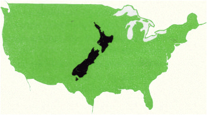

instruments. They waged long wars with the first settlers, often in a spirit of almost medieval chivalry. In one battle last century a Maori tribe had a British Regiment surrounded. They found that the British were running short of ammunition and food, so the Maori Chief sent in a messenger and said that they didn’t like to fight on inferior terms and, therefore, they would send in some powder and shot and food. This they did, and then they got down to fighting again.
The present Maoris go to schools and universities, have a Cabinet Minister of their own race, and four Maori members in the House of Representatives. Their Maori Battalion has been the most famous unit of all the New Zealand troops in the present war. You will find that there is no color bar and that Maoris eat in the same restaurants, travel in the same trains.
You will find them dignified and musical. They sing songs of the Hawaiian type and have many beautiful dances. To see them dance you will have to go to a Maori concert or one of the Maori areas like Rotorua, because there are no Maori night clubs or anything of that type. In parts of the country you will see the great fortifications with trenches and revetments and palisades which they built during their wars. It is also worth while to watch a Maori haka or war dance. This has become a New Zealand institution. School football teams
line up opposite one another and do a haka before the game starts, and you will find the New Zealander, white as well as Maori, apt to break into his school or college haka once a dance or a party really gets going. You will find lots of Maori words in common use, such as “whare,”, pronounced it “warry,” meaning hut; kai, pronounced “ky,” meaning food; and kia ora (key ora), meaning good luck.
AS you will see from the illustration above, New Zealand is a small country in comparison with the United States. The area of the three islands (North Island, South Island, and tiny Stewart Island) total 103,043 square miles. That about equals the size of New